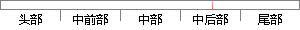

分别进行样本外验证和时间外验证，其中样本外验证完全使用27日数据，进行五折交叉验证，并进行三组对比实验，一组不包含访问特征，一组不包含字符特征，一组包含所有特征。
片段位置图

相似结果|
1
原句片段：分别进行样本外验证和时间外验证，其中样本外验证完全使用27日数据，进行五折交叉验证，并
相似片段 1：但由于我国金融市场并不成熟,发展时间较短,目前针对...分别对样本内数据和样本外数据进行计算验证,得出各个...可能会导致套期保值效果的并不完全符合实际市场的需要...
|
※ 片段修改建议 ※
近似词参考：- 分别：别离 划分 离别
- 进行：举行
- 时间：时候
- 其中：此中 个中
- 完全：彻底 完整
- 使用：利用
- 进行：举行
- 交叉：交织
- 进行：举行
- 对比：对照 比较 比拟
- 实验：尝试 实行 试验
- 包含：包括 包罗 包孕 蕴含
- 访问：拜候 会见 接见 走访
- 特征：特点 特性
- 包含：包括 包罗 包孕 蕴含
- 特征：特点 特性
- 包含：包括 包罗 包孕 蕴含
- 所有：全部
- 特征：特点 特性
系统自动生成语句：别离举行样本外验证和时候外验证，此中样本外验证彻底利用27日数据，举行五折交织验证，并举行三组对照尝试，一组不包括拜候特点，一组不包括字符特点，一组包括全部特点。
注：本片段修改建议为系统自动生成，仅供参考。